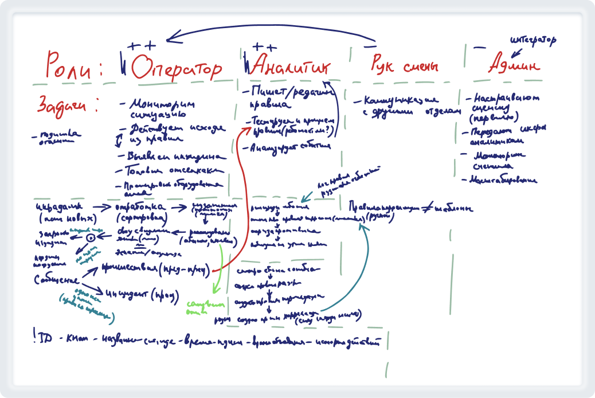
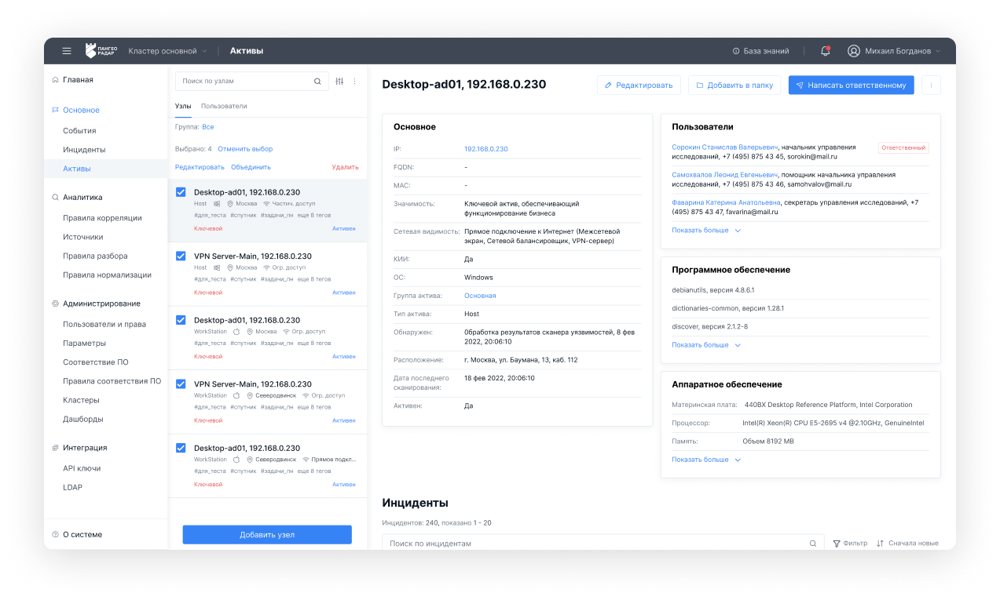
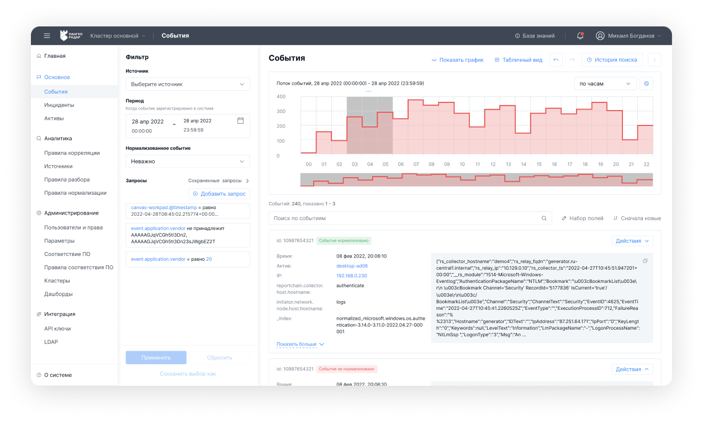
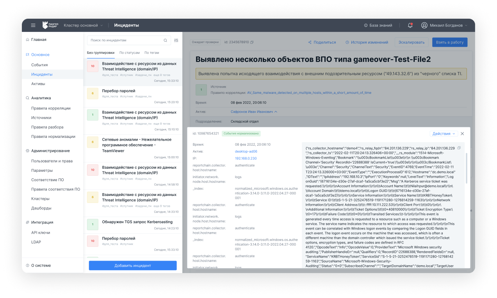
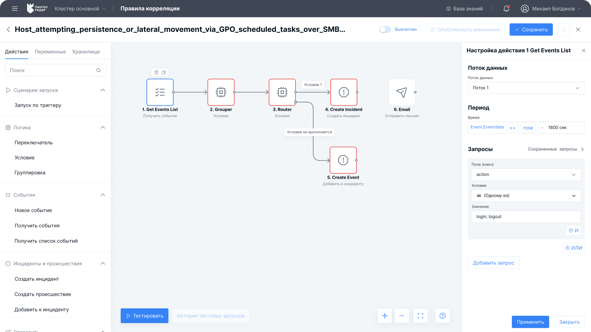
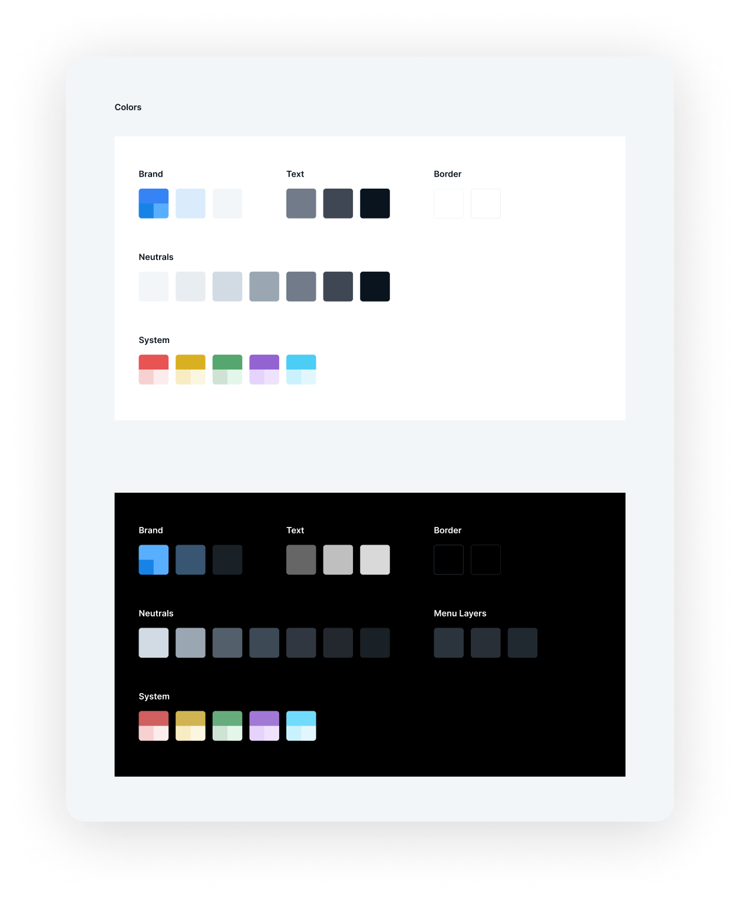

Пангео Радар: как сделать сложную систему кибербезопасности понятнее для пользователей
Платформа для мониторинга событий информационной безопасности, работы с активами, расследования инцидентов и настройки правил обнаружения угроз.
Контекст
Это был мой первый крупный проект в агентстве „Собака Павлова“ и одновременно проект на испытательном сроке.
Пангео Радар — платформа для мониторинга событий информационной безопасности. Система собирает данные из множества источников внутри корпоративной инфраструктуры, помогает отслеживать подозрительную активность, выявлять угрозы и расследовать инциденты.
Основными пользователями были специалисты по информационной безопасности: операторы, аналитики и администраторы системы.
Проблема
Продукт развивался много лет и постепенно обрастал новыми возможностями.
Опытные специалисты хорошо ориентировались в системе, но для новых сотрудников порог входа оставался высоким. Важные сценарии соседствовали с редко используемыми функциями, часть операций требовала глубокого понимания предметной области, а некоторые настройки выполнялись через написание правил и логических выражений.
Перед командой стояла задача сделать систему понятнее и удобнее, не потеряв её профессиональные возможности.
Моя роль
Я участвовала в исследовании пользователей, проектировании сценариев работы с событиями безопасности и переработке интерфейсов платформы.
В зоне моей ответственности были сценарии работы с событиями: структура данных, фильтрация, поиск, состояния и логика перехода от события к анализу возможного инцидента.
Вместе с командой мы изучали предметную область информационной безопасности, проводили интервью с пользователями, анализировали рабочие сценарии, проектировали новые интерфейсы и собирали библиотеку компонентов для дальнейшего развития продукта.
Исследование
Мы провели серию интервью со специалистами по информационной безопасности и подробно разобрали их ежедневную работу.
В ходе исследования выделили три основные роли:
- оператор;
- аналитик;
- администратор.

Несмотря на различие обязанностей, на практике эти роли часто совмещались одним человеком. Поэтому мы отказались от идеи жёсткого разделения интерфейсов по ролям и сосредоточились на сценариях работы.
Работа с событиями безопасности
Одной из моих основных задач стало проектирование интерфейсов для работы с событиями безопасности.
Система ежедневно собирала большое количество информации о действиях пользователей, устройствах, сетевой активности и изменениях внутри инфраструктуры. Пользователям нужно было быстро находить важные события среди большого объёма данных, анализировать их и принимать решения о дальнейших действиях.
При проектировании особое внимание уделялось структуре данных, фильтрации, поиску и визуальному выделению действительно важных сигналов.



Конструкторы правил
Отдельной частью продукта были инструменты-конструкторы для настройки правил обнаружения угроз и обработки событий.
Раньше часть настроек требовала написания правил и логических выражений. Это повышало порог входа и делало продукт сложным для менее опытных пользователей. Мы стремились перевести сложную логику в визуальную форму: показать условия, зависимости и последовательность действий так, чтобы специалист мог работать с правилами через интерфейс, а не через код. В этой части мне особенно пригодился инженерный бэкграунд и опыт работы с логическими конструкциями: условиями, группами условий и связками И/ИЛИ.

Результат
За шесть месяцев был перепроектирован весь сервис.
В результате появились:
- более 160 экранов в интерактивном прототипе;
- библиотека компонентов для дальнейшего развития продукта;
- единые принципы построения интерфейсов;
- более понятная структура продукта для новых пользователей.
Для меня этот проект стал первым опытом работы со сложной enterprise-системой, где дизайн напрямую зависел от понимания предметной области, логики процессов и особенностей работы пользователей.

Для меня главный результат был в том, что я справилась и осталась работать в Собаке.